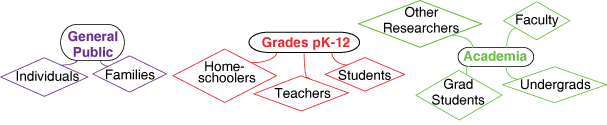
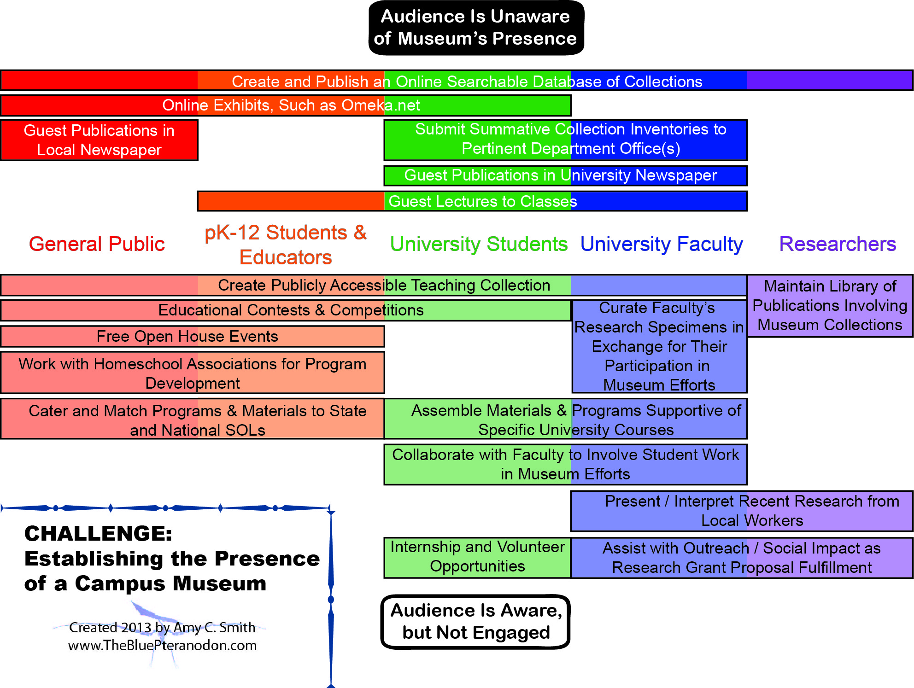

Engaging the CommunityMuseum AudiencesI see museums as having three major categories of audiences: the general public, people afilliated with grades from prekindergarten through twelve, and members of higher Academia. These main categories can be split up into the following subcategories: We are a campus museum. How can we effectively engage the community?Engaging the community may provide different challenges for a campus museum than for a standalone museum. Regardless of location, museum size, or collection types, what remains clear is that not only does the audience have to be made aware of the museum's existence, it must be engaged as well. Having worked at two campus museums myself, I created the following chart listing some ideas to involve various groups within any campus museum's community. Please click on the picture to see a larger view, or click the link below to download it as a pdf. PDF of Establishing the Presence of a Campus Museum Science Standards of Learning (SOLs)Science Standards of Learning, or SOLs, are one of the ways to easily reach the pK-12 audiences through outreach efforts. By integrating National and State SOLs into activities, exhibits, kits, literatures, workshops, and other endeavours, public and private education can be supported by materials and efforts that already reach other audiences. This site links its provided activities to the National Science Standards of Learning as well as several different State Standards of Learning, which I hope to increase. To navigate the SOL pages, please see the options below the Community Engagement tab above. |